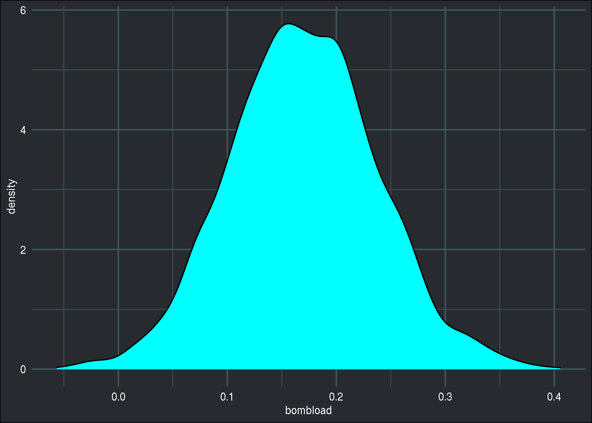

No excuse not to be a Bayesian anymore
My first encounter with Bayesian statistics was around 10 years ago, when I was doing my econometrics master’s degree. I was immediately very interested by the Bayesian approach to fit econometric models, because, when you’re reading about Bayesian approaches, it just sounds so easy and natural. You have a model, you might have some prior beliefs about the models parameters, and Bayes’ rule tells you how your beliefs should change when confronting the model to data (evidence). It is really appealing, and what I really liked as well was the interpretation of the results. It was very natural as well. Once your software is done estimating/training the model, you don’t actually get a vector of values for the parameters of the model. You get whole distributions for each parameter, so-called posterior distributions. You can then make statements like “there’s a 95% probability that this parameter lies between 0.12 and 0.21” for instance, which is a statement that you cannot make in a frequentist/classical framework.
However, while this was very appealing to me at the time, there is no free lunch as they say. At the time, and it was not that long ago, doing Bayesian statistics was not as straightforward as it is now, as I will show you in this blog post. At the time, the BUGS language was still the standard way to describe a Bayesian model and the actual estimation procedure. However, using the BUGS language was tricky; there was WinBUGS, a Windows tool that had already been discontinued at the time in favour of OpenBUGS, which was what I was using. The professor teaching this class, who eventually became one of my PhD advisors, was using WinBUGS to teach, but I was using Linux at the time already, so I went with OpenBUGS which worked with WINE, I think (WINE is a compatibility layer that allows running some Windows programs on Linux. It is quite amazing what WINE is able to do, so much so that Valve forked it to create Proton, which enables running Windows games on Linux on their popular Steam platform). Plus, I found out that there was an R package to call OpenBUGS from R and get the results back into R seamlessly! I think that I remember that there was one for WINBUGS as well, but I also think I remember I could not get it to work. Anyways, after some digging, I found an even better alternative called JAGS. JAGS is open source, and is natively available for Linux. It is also able to run in parallel, which is really useful for Bayesian inference. In any case, these were separate languages/programs from R, and as such the user had to learn how to use them. The way they worked was that users needed to write the Bayesian model in a separate text file. I will illustrate this with an example that I worked on during my Master’s, back in 2011. The example is taken from Ioannis Ntzoufras’ book Bayesian Modeling Using WinBUGS. The example can be found in chapter 7, section 7.4.2. The dataset is from Montgomery et al. (2006) and refers to the number of aircarft damages in 30 strike missions during the Vietnam War.
Here’s a description of the data, taken from Ntzoufras’ book:
- damage: the number of damaged locations of the aircraft
- type: binary variable which indicates the type of the plane (0 for A4, B for A6)
- bombload: the aircraft bomb load in tons
- airexp: the total months of aircrew experience.
The goal is to find a model for damage, what variables explain the amount of damage on the aircraft? Now, something quite interesting here, is that we only have 30 observations, and getting more observations is very costly. So what are you to do with this?
First, let’s write the model down:
[ \[\begin{align} \text{damage}_i & = \text{Poisson}(\lambda_i) \\ \log(\lambda_i) & = \beta_1 + \beta_2*\text{type}_i + \beta_3 * \text{bombload}_i + \beta_4*\text{airexp}_i \end{align}\] ]
where (i = 1, 2, 3, …, 30). Since damage is a count variable, we go with a Poisson distribution, which only has one parameter, (). () is defined on the second line. Both these definition form the likelihood, which should be familiar to any statistician. In JAGS and BUGS, this likelihood had to be written in a separate text file, as I mentioned above, with a syntax that was very similar to R’s (at least for JAGS, because if memory serves, BUGS’s syntax was more different):
model{
for (i in 1:30){damage[i] ~ dpois( lambda[i] )
log(lambda[i]) <- b1 + b2 * type[i]
+ b3 * bombload[i] + b4 * airexp[i]}
b1 ~ dnorm(0, 1.0E-4)
b2 ~ dnorm(0, 1.0E-4)
b3 ~ dnorm(0, 1.0E-4)
b4 ~ dnorm(0, 1.0E-4)}
The last four lines are the prior distributions on the parameters. This is something that does not exist in frequentist statistics. Frequentists would maximise the above likelihood and call it a day. However, the Bayesian framework allows the practitioner to add prior knowledge into the model. This prior knowledge can come from domain knowledge or the literature. However, if the practitioner does not have a clue about good priors, then diffuse priors can be used. Diffuse priors do not carry much information, if at all. The priors above are diffuse; they’re normally distributed, centered around 0 with very small precision (in the Bayesian framework, the normal distribution is defined with two parameters, () and (), where (= )). But since my student years I have learned that using such priors is actually not a very good idea, and better alternatives exist (priors that at least provide some regularization for instance). The Bayesian approach to statistics is often criticized for this, because priors are not objective. If you’re not using diffuse priors, then you’re using priors that carry some information. This information is subjective and subjectivity is a big No-No. But should subjectivity be a No-No? After all, if you can defend your priors, either because of domain knowledge, or because of past studies that provide some clue why not use this information? Especially when here is very little data like in this example. Also, you can perform a sensitivity analysis, and show how the posterior distribution of the parameters change when your priors change. What is important is to be fully transparent about the priors you’re using, and have clear justification for them. If these conditions are met, I don’t see why you should not use prior information in your model. Plus, even in frequentist statistics prior knowledge is used as well, for instance by pre-processing the data in a certain way, or by constraining the values the parameters are allowed to take in the optimisation routine (I’m looking at you, L-BFGS-B).
Now, let’s continue with the data. To load the data, I had to manually created each variable (but maybe JAGS now uses data frames) to pass it to jags():
# We load the data this way since jags only takes numerical vectors, matrices or lists
# containing the names as input
damage <- c(0, 1, 0, 0, 0, 0, 1, 0, 0, 2, 1, 1, 1, 1, 2, 3, 1, 1, 1, 2, 0, 1, 1, 2, 5, 1, 1, 5, 5, 7)
type <- c(0, 0, 0, 0, 0, 0, 0, 0, 0, 0, 0, 0, 0, 0, 0, 1, 1, 1, 1, 1, 1, 1, 1, 1, 1, 1, 1, 1, 1, 1)
bombload <- c(4, 4, 4, 5, 5, 5, 6, 6, 6, 7, 7, 7, 8, 8, 8, 7, 7, 7, 10, 10, 10, 12, 12, 12, 8, 8, 8, 14, 14, 14)
airexp <- c(91.5, 84, 76.5, 69, 61.5, 80, 72.5, 65, 57.5, 50, 103, 95.5, 88, 80.5, 73, 116.1, 100.6, 85, 69.4, 53.9,
112.3, 96.7, 81.1, 65.6, 50, 120, 104.4, 88.9, 73.7, 57.8)Now that we loaded the data, we can fit the model, by first defining a vector of parameters, and a named list for the data:
parameters <- c("b1", "b2", "b3","b4")
data <- list("damage","type","bombload","airexp")
#We don't give inits to jags since it can generate appropriate initial values
#Use this on single core machines, and/or windows machines
model_fit<-jags(data,inits=NULL,parameters,n.iter=50000,
model.file="bugsjags.txt",n.chains=4,DIC=T)
Notice that jags() has an argument called model.file, which is the file I showed above. Below, the code to take a look at the result:
#Let's see the results
model_fit$BUGSoutput
model.mcmc<-as.mcmc(model_fit)
traceplot(model.mcmc)
xyplot(model.mcmc)
heidel.diag(model.mcmc)
par(mfrow=c(2,3))
autocorr.plot(model.mcmc[1],auto.layout=F,ask=F)
geweke.plot(model.mcmc)
We’re actually not looking at this, because I’m not running the code; I only wanted to show you how this was done 8 years ago. But why? Because now I can show you how this is done nowadays with {rstanarm}:
library(rstanarm)
model_fit_stan <- stan_glm(damage ~ ., data = bombs, family = poisson)##
## SAMPLING FOR MODEL 'count' NOW (CHAIN 1).
## Chain 1:
## Chain 1: Gradient evaluation took 1.7e-05 seconds
## Chain 1: 1000 transitions using 10 leapfrog steps per transition would take 0.17 seconds.
## Chain 1: Adjust your expectations accordingly!
## Chain 1:
## Chain 1:
## Chain 1: Iteration: 1 / 2000 [ 0%] (Warmup)
## Chain 1: Iteration: 200 / 2000 [ 10%] (Warmup)
## Chain 1: Iteration: 400 / 2000 [ 20%] (Warmup)
## Chain 1: Iteration: 600 / 2000 [ 30%] (Warmup)
## Chain 1: Iteration: 800 / 2000 [ 40%] (Warmup)
## Chain 1: Iteration: 1000 / 2000 [ 50%] (Warmup)
## Chain 1: Iteration: 1001 / 2000 [ 50%] (Sampling)
## Chain 1: Iteration: 1200 / 2000 [ 60%] (Sampling)
## Chain 1: Iteration: 1400 / 2000 [ 70%] (Sampling)
## Chain 1: Iteration: 1600 / 2000 [ 80%] (Sampling)
## Chain 1: Iteration: 1800 / 2000 [ 90%] (Sampling)
## Chain 1: Iteration: 2000 / 2000 [100%] (Sampling)
## Chain 1:
## Chain 1: Elapsed Time: 0.04083 seconds (Warm-up)
## Chain 1: 0.043647 seconds (Sampling)
## Chain 1: 0.084477 seconds (Total)
## Chain 1:
##
## SAMPLING FOR MODEL 'count' NOW (CHAIN 2).
## Chain 2:
## Chain 2: Gradient evaluation took 5e-06 seconds
## Chain 2: 1000 transitions using 10 leapfrog steps per transition would take 0.05 seconds.
## Chain 2: Adjust your expectations accordingly!
## Chain 2:
## Chain 2:
## Chain 2: Iteration: 1 / 2000 [ 0%] (Warmup)
## Chain 2: Iteration: 200 / 2000 [ 10%] (Warmup)
## Chain 2: Iteration: 400 / 2000 [ 20%] (Warmup)
## Chain 2: Iteration: 600 / 2000 [ 30%] (Warmup)
## Chain 2: Iteration: 800 / 2000 [ 40%] (Warmup)
## Chain 2: Iteration: 1000 / 2000 [ 50%] (Warmup)
## Chain 2: Iteration: 1001 / 2000 [ 50%] (Sampling)
## Chain 2: Iteration: 1200 / 2000 [ 60%] (Sampling)
## Chain 2: Iteration: 1400 / 2000 [ 70%] (Sampling)
## Chain 2: Iteration: 1600 / 2000 [ 80%] (Sampling)
## Chain 2: Iteration: 1800 / 2000 [ 90%] (Sampling)
## Chain 2: Iteration: 2000 / 2000 [100%] (Sampling)
## Chain 2:
## Chain 2: Elapsed Time: 0.037986 seconds (Warm-up)
## Chain 2: 0.041253 seconds (Sampling)
## Chain 2: 0.079239 seconds (Total)
## Chain 2:
##
## SAMPLING FOR MODEL 'count' NOW (CHAIN 3).
## Chain 3:
## Chain 3: Gradient evaluation took 5e-06 seconds
## Chain 3: 1000 transitions using 10 leapfrog steps per transition would take 0.05 seconds.
## Chain 3: Adjust your expectations accordingly!
## Chain 3:
## Chain 3:
## Chain 3: Iteration: 1 / 2000 [ 0%] (Warmup)
## Chain 3: Iteration: 200 / 2000 [ 10%] (Warmup)
## Chain 3: Iteration: 400 / 2000 [ 20%] (Warmup)
## Chain 3: Iteration: 600 / 2000 [ 30%] (Warmup)
## Chain 3: Iteration: 800 / 2000 [ 40%] (Warmup)
## Chain 3: Iteration: 1000 / 2000 [ 50%] (Warmup)
## Chain 3: Iteration: 1001 / 2000 [ 50%] (Sampling)
## Chain 3: Iteration: 1200 / 2000 [ 60%] (Sampling)
## Chain 3: Iteration: 1400 / 2000 [ 70%] (Sampling)
## Chain 3: Iteration: 1600 / 2000 [ 80%] (Sampling)
## Chain 3: Iteration: 1800 / 2000 [ 90%] (Sampling)
## Chain 3: Iteration: 2000 / 2000 [100%] (Sampling)
## Chain 3:
## Chain 3: Elapsed Time: 0.041033 seconds (Warm-up)
## Chain 3: 0.042982 seconds (Sampling)
## Chain 3: 0.084015 seconds (Total)
## Chain 3:
##
## SAMPLING FOR MODEL 'count' NOW (CHAIN 4).
## Chain 4:
## Chain 4: Gradient evaluation took 5e-06 seconds
## Chain 4: 1000 transitions using 10 leapfrog steps per transition would take 0.05 seconds.
## Chain 4: Adjust your expectations accordingly!
## Chain 4:
## Chain 4:
## Chain 4: Iteration: 1 / 2000 [ 0%] (Warmup)
## Chain 4: Iteration: 200 / 2000 [ 10%] (Warmup)
## Chain 4: Iteration: 400 / 2000 [ 20%] (Warmup)
## Chain 4: Iteration: 600 / 2000 [ 30%] (Warmup)
## Chain 4: Iteration: 800 / 2000 [ 40%] (Warmup)
## Chain 4: Iteration: 1000 / 2000 [ 50%] (Warmup)
## Chain 4: Iteration: 1001 / 2000 [ 50%] (Sampling)
## Chain 4: Iteration: 1200 / 2000 [ 60%] (Sampling)
## Chain 4: Iteration: 1400 / 2000 [ 70%] (Sampling)
## Chain 4: Iteration: 1600 / 2000 [ 80%] (Sampling)
## Chain 4: Iteration: 1800 / 2000 [ 90%] (Sampling)
## Chain 4: Iteration: 2000 / 2000 [100%] (Sampling)
## Chain 4:
## Chain 4: Elapsed Time: 0.036928 seconds (Warm-up)
## Chain 4: 0.041124 seconds (Sampling)
## Chain 4: 0.078052 seconds (Total)
## Chain 4:
There is a lot of output, but the input was a single line that should look very familiar to practitioners used to the glm() function. I only used default options, as well as the default priors. Specifying different priors is quite simple, but I won’t discuss this here, because this blot post, while it might look like a tutorial, is not a tutorial. What I wanted to show you is the difference that 9 years make in software development. {stan} is an R package for Bayesian statistics that came out in 2012 and which has been developed ever since. Just like JAGS and BUGS, users can write external files with very detailed models. But for smaller, or more standard problems, {rstanarm}, makes Bayesian inference very easy and feel familiar to the traditional way of doing things and as its name implies, uses {stan} under the hood.
Now let’s continue a little bit and take a look at the model summary:
summary(model_fit_stan)##
## Model Info:
## function: stan_glm
## family: poisson [log]
## formula: damage ~ .
## algorithm: sampling
## sample: 4000 (posterior sample size)
## priors: see help('prior_summary')
## observations: 30
## predictors: 4
##
## Estimates:
## mean sd 10% 50% 90%
## (Intercept) -0.5 0.9 -1.6 -0.5 0.7
## type 0.6 0.5 -0.1 0.6 1.2
## bombload 0.2 0.1 0.1 0.2 0.3
## airexp 0.0 0.0 0.0 0.0 0.0
##
## Fit Diagnostics:
## mean sd 10% 50% 90%
## mean_PPD 1.5 0.3 1.1 1.5 1.9
##
## The mean_ppd is the sample average posterior predictive distribution of the outcome variable (for details see help('summary.stanreg')).
##
## MCMC diagnostics
## mcse Rhat n_eff
## (Intercept) 0.0 1.0 2504
## type 0.0 1.0 2412
## bombload 0.0 1.0 2262
## airexp 0.0 1.0 2652
## mean_PPD 0.0 1.0 3813
## log-posterior 0.0 1.0 1902
##
## For each parameter, mcse is Monte Carlo standard error, n_eff is a crude measure of effective sample size, and Rhat is the potential scale reduction factor on split chains (at convergence Rhat=1).Just like for Bayesian stats, we get our parameter’s estimates. But wait! In the intro of this blog post, I said that in Bayesian statistics, we estimate full parameter distributions. So why are we getting point estimates? Well, these are statistics from the posterior distribution, the mean, standard deviation and some deciles.
To explore the results, I like to use {bayestestR}:
library(bayestestR)
describe_posterior(model_fit_stan)## # Description of Posterior Distributions
##
## Parameter | Median | CI | CI_low | CI_high | pd | ROPE_CI | ROPE_low | ROPE_high | ROPE_Percentage | Rhat | ESS
## ----------------------------------------------------------------------------------------------------------------------
## (Intercept) | -0.473 | 89 | -1.898 | 0.929 | 0.711 | 89 | -0.100 | 0.100 | 0.082 | 0.999 | 2504
## type | 0.577 | 89 | -0.230 | 1.365 | 0.869 | 89 | -0.100 | 0.100 | 0.099 | 1.002 | 2412
## bombload | 0.169 | 89 | 0.065 | 0.275 | 0.994 | 89 | -0.100 | 0.100 | 0.108 | 1.001 | 2262
## airexp | -0.014 | 89 | -0.028 | -0.001 | 0.953 | 89 | -0.100 | 0.100 | 1.000 | 1.000 | 2652Let’s also actually see the posterior of, say, (_3):
library(insight)## Warning: package 'insight' was built under R version 3.6.2posteriors <- get_parameters(model_fit_stan)
ggplot(posteriors, aes(x = bombload)) +
geom_density(fill = "cyan") +
brotools::theme_blog()
I won’t again go into much detail, because you can read the very detailed Vignettes on {bayestestR}’s website: Get started with Bayesian Analysis and Describing the posterior which explain all of this much better than I would ever do. The code I’m showing here is basically a copy paste of these Vignettes, so if I piqued your interest, go read those Vignettes! I also highly recommend reading {rstanarm}’s Vignettes, and grabbing the second edition of Statistical Rethinking, by Richard McElreath, it is a great intro to Bayesian statistics with {stan}.
Now, as the title of this blog post reads, there is no excuse not to use Bayesian statistics; from a software point of view, it’s as simple as ever. And by the way, {stan} models are supported in {tidymodels}’ {parsnip} package as well, which makes things even easier!